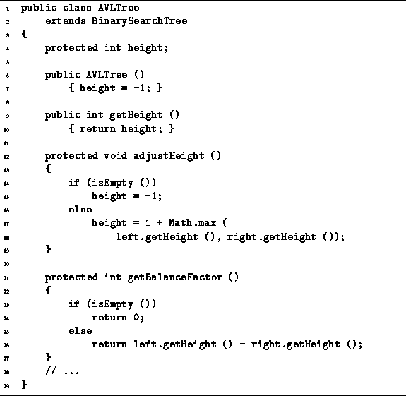

Data Structures and Algorithms
with Object-Oriented Design Patterns in Java
Data Structures and Algorithms
with Object-Oriented Design Patterns in Java
A no-arg constructor is shown in Program  .
This constructor creates an empty AVL tree.
The height field is set to the value -1,
which is consistent with the empty tree.
Notice that according to Definition ,
the empty tree is AVL balanced.
Therefore, the result is a valid AVL tree.
Clearly, the running time of the constructor is O(1).
.
This constructor creates an empty AVL tree.
The height field is set to the value -1,
which is consistent with the empty tree.
Notice that according to Definition ,
the empty tree is AVL balanced.
Therefore, the result is a valid AVL tree.
Clearly, the running time of the constructor is O(1).

Program: AVLTree class constructor, getHeight, adjustHeight, and getBalanceFactor methods.
 Copyright © 1998 by Bruno R. Preiss, P.Eng. All rights reserved.
Copyright © 1998 by Bruno R. Preiss, P.Eng. All rights reserved.